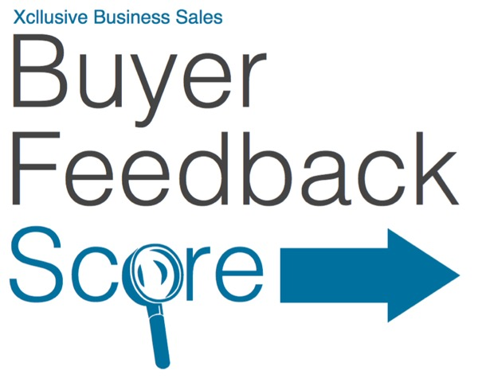

For
{{business_name}}
Generated on the {{score_generated}}
Score {{score_version}}
What you can learn by reading this report:
- How your business compares to other businesses that have been successfully sold by Xcllusive.
- Which areas of your business sale that, if improved, should boost your business’s attractiveness on the current
market.
- Which areas of your business sale that if not improved could damage your likelihood of a successful sale.
What is the Buyer Feedback Score?
The Xcllusive Business Buyer Feedback Score Report is a method of reporting feedback from buyers who have enquired
about your business, designed to rank that feedback against other businesses. It is generated using up-to-date enquiry
data, historical business sales data and buyer feedback on how they see the different aspects of your business.
The purpose of the report is to give you, the business owner, an insight into how the buyers market see your business, and
what you can do to increase the attractiveness of your business to buyers in the current market.
How does it work?
Using buyer feedback and current enquiry numbers, the Buyer Feedback Score ranks your business’s performance in the
current market against the scores of last 20 businesses sold. Each of these businesses have been ranked using exactly
the same criteria as your own.
The final score is based on five segments identified over time to have the highest importance to buyers and to provide the
greatest indicator of sales success rates. The average of these scores is then used to calculate your total Buyer
Feedback Score. The five segments are as follows:
-
Number of Enquiries: The number of enquiries your business has received over the past four weeks as compared
to the current average across all businesses.
-
Perceived Price from Buyer’s Position: The buyers’ response to the price of your business during direct
contact with enquirers of your business.
-
Information, Transparency, Momentum: How buyers’ perceive and feel about the availability/reliability
of information, the speed at which information is provided and owner co-operation throughout the enquiry process.
-
Current Interest: The current level of progress towards purchase and interest amongst the buyers who have
already enquired about your business.
-
Buyer’s Perceived Risk: The most common concerns or praise offered by buyers in regards to your business’s
security of income and sustainability after you exit the business.
Each of these items will receive a score between 10 and 90; 10 being a very poor rating and 90 being an exemplary rating.
Each score range indicates that an action needs to be taken. This is explained in more detail on page 4 of this report.
As part of the report, you will also be given an indication as to where your business sale can be improved so as to boost
your score, and ultimately, your business attractiveness.
How accurate is it?
With the exception of the automatically generated enquiries score, all other scores are based off direct buyer feedback and
inputted by your agent as objectively as possible. With that in mind, there is some room for error. That is why this
score should be treated as guidance only. By assigning a predetermined value to common buyer feedback this report
removes subjectivity as best as possible in order to get down the practical science of buyer behaviour.
Disclaimer
The Xcllusive Business Sales Buyer Feedback Score Report is a method of reporting feedback from buyers who have enquired
about your business. Xcllusive does not guarantee that the findings are free from errors and reminds recipients that
it is for information purposes only and is not to be taken as business advice. Your agent may choose to include their
thoughts in response to the results. Once again, this is provided for information purposes and suggestion only and
is not to be taken as business advice.
Your Buyer Feedback Score
{{totalScore}}
How your business ranked in each Category
This graph shows all your scores from page 3 as well as your calculated Buyer Feedback Score on the far right. The colours
on the background show three different colours, each with with an action associated with it. They are explained below:
Satisfactory: You have scored very well in this area and are well positioned for sale. Where you have scored
this, no action is required, but keep in mind that improvements never hurt.
Possible Improvement: This area could be improved. Though scoring in this range isn’t ‘bad’, without any
action being taken it could affect your business’s attrativeness.
Needs Urgent Attention: Action is required to improve this score. Receiving a feedback score in this range
represents a problem that will almost definitely impact on your business’s attractiveness.
Addressing issues in problem areas will definitely improve the saleability of your business, though bear in mind that areas
such as ‘Enquires’ and ‘Interest’ will ultimately be affected by the other areas. For example, providing more information
to buyers could help a buyer decide to proceed further with their enquiry and as a result, boost your ‘Interest’ score.
Last 20 Businesses Sold VS Business Score
This graph displays how many of the
last 20 sold businesses sold by Xcllusive within each score range and where your business is currently placed
by comparison. As you can see; the greater the score, the more businesses sold. (please note that 81-90 level scores
are very rare)
*for full data see Appendix 1
Average Days on Market VS Business Score
This graph shows how long on average it took to sell the
last 20 businesses , categorised by their score range, and where your business is currently placed by comparison.
As you can see, the higher the score, the quicker it sells.
*for full data see Appendix 1
Your Buyer Feedback Score progress over time
How your Buyer Feedback Score has progressed over time.
*Note: if this is your first score this chart does not apply to you.
What to do with your score
The goal of the Buyer Feedback Score is to identify in what areas your business sale can be improved based on current feedback
and past business sales in order to increase your business’s attractiveness to current buyers. You will be getting
a phone call from Mark Attard over the next few days to discuss your results, however, if you would like to address
this sooner feel free to call your agent on 0430 599 001.
Good luck with your business sale
Xcllusive Business Sales
- Sell your Business with Certainty
Appendix1:
Last 20 Businesses Sold
Detailed Comparative Analysis
This chart displays sales data from the last 20 sold businesses and where your business is currently placed by comparison.
Only the last 20 sold businesses are used for these statistics so as to provide a more accurate representation of the
market as it exists today. These scores were generated just prior to each business being sold.
The point of this chart is to demonstrate how each score range affects different aspects of the business sale.
| Score just prior to Sale |
No. of Businesses Sold |
Average Days on the market |
% Businesses Sold (Out of 20) |
Average Value |
Value Range |
| 10-20 |
cell2_1 |
cell3_1 |
cell4_1 |
cell5_1 |
cell6_1 |
| 21-30 |
cell2_2 |
cell3_2 |
cell4_2 |
cell5_2 |
cell6_2 |
| 31-40 |
cell2_3 |
cell3_3 |
cell4_3 |
cell5_3 |
cell6_3 |
| 41-50 |
cell2_4 |
cell3_4 |
cell4_4 |
cell5_4 |
cell6_4 |
| 51-60 |
cell2_5 |
cell3_5 |
cell4_5 |
cell5_5 |
cell6_5 |
| 61-70 |
cell2_6 |
cell3_6 |
cell4_6 |
cell5_6 |
cell6_6 |
| 71-80 |
cell2_7 |
cell3_7 |
cell4_7 |
cell5_7 |
cell6_7 |
| 81-90 |
cell2_8 |
cell3_8 |
cell4_8 |
cell5_8 |
cell6_8 |
A Quick Explanation:
If you’re unsure about any items on the table, please find a brief explanation below:
-
No. of Business Sold: Displays how many of the 20 most recent sold businesses were sold from the corresponding
score range
-
Average Days on the Market: Displays the average number of days the 20 most recently sold businesses took
to sell within each score range.
-
% Businesses Sold: Displays the percentage of the 20 most recently sold businesses within each score range.
-
Average Value: Displays the average price of the 20 most recently sold businesses within each score range
-
Value Range: Displays the price range of the businesses represented within each score range.